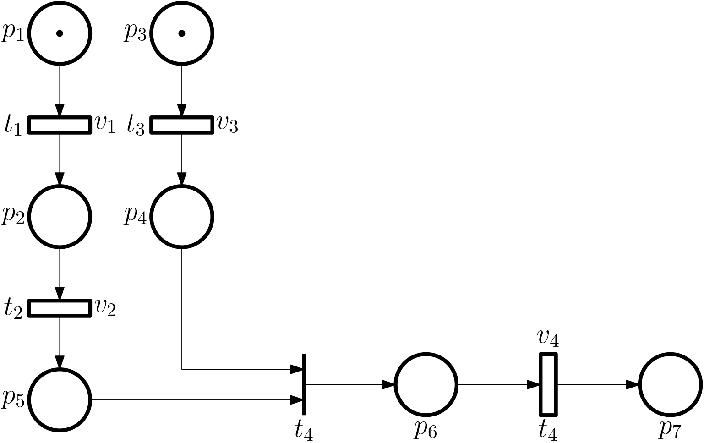
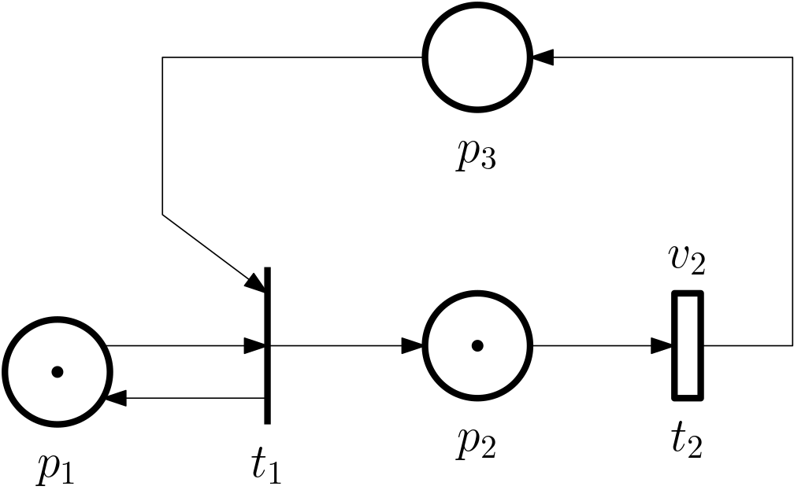
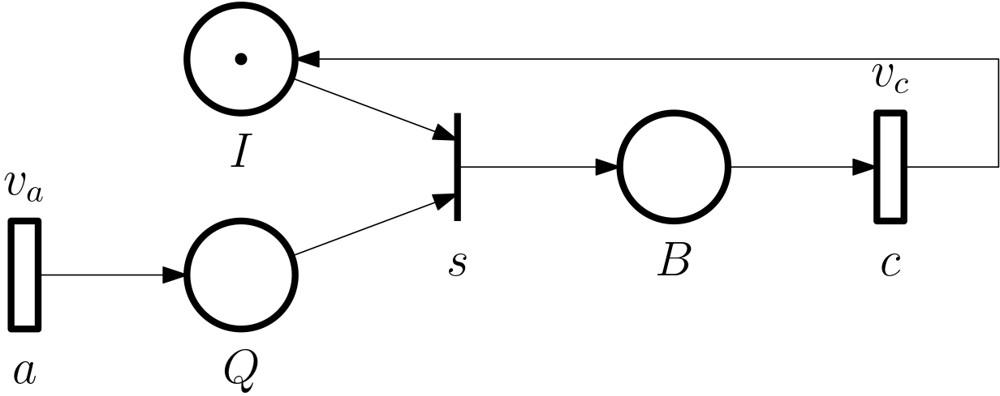

Petri nets
Why yet another modelling framework for DES?
- Richer expressivity than finite state automata (a finite Petri net even for an infinite state automaton).
- Theory and tools available, e.g. (max,+) algebra.
International standards available
- ‘ISO/IEC 15909-1:2019 Systems and Software Engineering — High-Level Petri Nets — Part 1: Concepts, Definitions and Graphical Notation’. ISO/IEC, August 2019. https://www.iso.org/standard/67235.html.
- ‘ISO/IEC 15909-2:2011 Systems and Software Engineering — High-Level Petri Nets — Part 2: Transfer Format’. ISO/IEC, February 2011. https://www.iso.org/standard/43538.html.
- ‘ISO/IEC 15909-3:2021: Systems and Software Engineering — High-Level Petri Nets — Part 3: Extensions and Structuring Mechanisms’. ISO/IEC, 2021. https://www.iso.org/standard/81504.html.
Petri net = weighted bipartite graph
. . .
\boxed{PN = \{\mathcal{P}, \mathcal{T}, \mathcal{A}, w\}}
- \mathcal{P} = \{p_1, \dots, p_n\} … a finite set of places
- \mathcal{T} = \{t_1, \dots, t_m\} … a finite set of transitions
- \mathcal{A} \subseteq (\mathcal{P} \times \mathcal{T}) \cup (\mathcal{T} \times \mathcal{P}) … a finite set of arcs
- (p_i, t_j) \in \mathcal{A} … from place p_i to transition t_j
- (t_j, p_i) \in \mathcal{A} … from transition t_j to place p_i
- w : \mathcal{A} \to \mathbb{N} … a weight function
Visualization
- Places = circles
- Transitions = bars
- Arcs = arrowed curves
- Weights = numbers on the arcs
- alternatively, for a lower weight (2, 3, 4) by multiple arcs
Example of a simple Petri net
\mathcal{P} = \{p_1, p_2\}
\mathcal{T} = \{t_1\}
\mathcal{A} = \{\underbrace{(p_1, t_1)}_{a_1}, \underbrace{(t_1, p_2)}_{a_2}\}
w(a_1) = w((p_1, t_1)) = 2
w(a_2) = w((t_1, p_2)) = 1

Additional definitions
- \mathcal{I}(t_j) … a set of input places of the transition t_j
- \mathcal{O}(t_j) … a set of output places of the transition t_j
Example of a more complex Petri net
- \mathcal{P} = \{p_1, p_2, p_3, p_4\}, \quad \mathcal{T} = \{t_1, t_2, t_3, t_4, t_5\}
- \mathcal{A} = \{(p_1, t_1), (t_1, p_1), (p_1, t_2),\ldots\}
- w((p_1, t_1)) = 2, \; w((t_1, p_1)) = 1, \; \ldots
. . .

Marking
. . .
x: \mathcal{P} \rightarrow \mathbb{N}
. . .
\bm x = \begin{bmatrix}x(p_1)\\ x(p_2)\\ \vdots \\ x(p_n) \end{bmatrix}
- we prefer calling it… state.
- marked Petri net: MPN = \{\mathcal{P}, \mathcal{T}, \mathcal{A}, w,x\}
Visualization of marked Petri net using tokens

\bm x = \begin{bmatrix}1\\ 0 \end{bmatrix}
. . .

\bm x = \begin{bmatrix}2\\ 1 \end{bmatrix}
Enabled transition
x(p_i) \geq w(p_i,t_j)\quad \forall p_i \in \mathcal{I}(t_j)
- Enabled transition can fire (can occur),
- but it doesn’t have to (we will exploit this in timed PN).
For an example, see the previous slide: in the first marked PN the transitions cannot fire, in the second it can.
State transition function
f: \mathbb N^n \times \mathcal{T} \rightarrow \mathbb N^n,
is defined for a transition t_j iff the transition is enabled.
If the transition t_j is enabled and fired, the state evolves as \bm x^+ = f(\bm x, t_j),
where \boxed{ x^+(p_i) = x(p_i) - w(p_i,t_j) + w(t_j,p_i), \; i = 1,\ldots,n.}
Fired transition moves tokens from the input to the output places.
Example: moving tokens around
. . .

- \bm x_0 = [2, 0, 0, 1]^\top (at the discrete time 0)
- enabled t_1
Example continued: fired t_1
. . .

- \bm x_1 = [1, 1, 1, 1]^\top (at the discrete time 1)
- enabled t_1, t_2, t_3
Example continued: fired t_2
. . .

- \bm x_2 = [1, 1, 0, 2]^\top (at the discrete time 2)
- but now back to time 1…
Example continued: back to time 1
. . .

- \bm x_1 = [1, 1, 1, 1]^\top (at the discrete time 1)
- enabled t_1, t_2, t_3, now fire t_3
Example continued: fired t_3 instead
. . .

- \bm x_2 = [0, 1, 0, 0]^\top (at the discrete time 2)
- the order of firing of enabled transitions matters.
But this dependence of the state evolution upon the order of firing the transitions is not surprising – we have already encountered it in automata when the active event set for a given state contains more then a single element.
Not all states are reachable
. . .

- From the initial state [2,1], the only reachable state is [0,2].
Indeed, the reachable final state is [0,2]. Note that the weight of the arc from the place p_1 to the transition t is 2, so both tokens are removed from the place p_1 when the transition t fires. But then the arc to the place p_2 has weight 1, so only one token is added to the place p_2. The other token is “lost”.
Reachability tree and graph


Number of tokens need not be preserved
It can be that \sum_{p_i\in\mathcal{O}(t_j)}w(t_j,p_i) < \sum_{p_i\in\mathcal{I}(t_j)} w(p_i,t_j)
or
\sum_{p_i\in\mathcal{O}(t_j)}w(t_j,p_i) > \sum_{p_i\in\mathcal{I}(t_j)} w(p_i,t_j)
AND-convergence, AND-divergence

OR-convergence and OR-divergence

Nondeterminism (conflict) in a PN
. . .

- Similarly as in automata, if the active event set for a given state contains more than one element (event,transition).
Subclass of PN: Event graph

- Each place one input and one output transition (all ws equal to 1).
- No OR-convergence, no OR-divergence.
- Also known as Decision-free PN.
- It can model synchronization.
Another subclass: State machine

- Each transition has one input and one output place.
- No AND-convergence, no AND-divergence.
- Does not model synchronization.
- It can model race conditions.
- With no source (input) and sink (output) transitions, the No. of tokens is preserved.
Incidence matrix
. . .
\bm A \in \mathbb{Z}^{n\times m}, where n is the number of places and m is the number of transitions, and
. . .
a_{ij} = w(t_j,p_i) - w(p_i,t_j).
- Some define it as the transpose.
State equation for a Petri net
\bm x^+ = \bm x + \bm A \bm u, where \bm u is a firing vector for the enabled j-th transition \bm u = \bm e_j = \begin{bmatrix}0 \\ \vdots \\ 1\\ \vdots\end{bmatrix} with the 1 at the j-th position.
Note that Cassandras in his book defines everything in terms of the transposed quantities, but I prefer sticking to the notion of a state vector as a column.
Example

\bm x_0 = \begin{bmatrix} 2\\ 0\\ 0\\ 1 \end{bmatrix}
. . .
\bm A = \begin{bmatrix} -1 & 0 & -1\\ 1 & 0 & 0\\ 1 & -1 & -1\\ 0 & 1 & -1 \end{bmatrix}
\begin{aligned} \bm x_1 &= \bm x_0 + \bm A \bm u_1\\ \bm x_2 &= \bm x_1 + \bm A \bm u_2\\ \vdots & \end{aligned}
Beware the notation here: the lower index corresponds to the discrete time.
Queueing systems modelled by PN
. . .

- a is a spontaneous transition (no input places).
- s needs a customer in the queue and the server being idle.
- c needs the server being busy.
. . .
\quad \mathcal{P} = \{Q, I, B\}
The transition a is an input transition – the tokens are added to the system.

- Initial state: (0,1,0)
- Trace (of transitions/events): \{a,s,a,a,c,s,a\}
- Final state: (2,0,1)
Some more

- The arrival transition always enabled.
- The server can break down, and then be repaired.
- Completing the service \neq customer departure.
d is an output transition – the tokens are removed from the system.
Example: beverage vending machine

Timed Petri nets (TPN)
- Enabled transitions do not have to fire immediately.
- Indeed, in general \boxed{\mathrm{ENABLING} \neq \text{FIRING}.}
- There can be a delay between enabling and firing.
- For the j-th transition, the delay of the k-th firing is v_{j,k}, v_j = \{v_{j,1}, v_{j,2}, \ldots \}.
- But not all transitions have to be timed.
- Timed transitions \mathcal{T}_\mathrm{D}\subseteq \mathcal{T},
- Clock structure for a PN: \mathcal{V} = \{v_j\mid t_j\in\mathcal{T}_\mathrm{D}\}
. . .
\boxed{TPN = \{\mathcal{P}, \mathcal{T}, \mathcal{A}, w, x, \mathcal{V}\}}
Example of a timed Petri net

- Model of processing multiple tasks: task 1 and task 2 are processed sequentially, and task 3 is processed in parallel with them; task 4 can only be process after both tasks 2 and 3 are finished. Finishing individual tasks corresponds to the individual transitions. The transition 4 is untimed, it only expresses the logical requirement.
- Sometimes instead of a bar, the untimed transitions are modelled using similarly thing rectangles as the timed transitions, but filled.
Places can also be delayed
- Called holding time for a place.
- But not adopted by all authors.
- Minimum time the token must rest in the place.
- It can stay longer if the output transition is waiting for other places.
Timed Petri net dynamics
- For general Petri nets too complex, here we only consider event graphs.
- Define:
. . .
\{\tau_{j,1}, \tau_{j,2}, \ldots\} are firing times of the j-th transition.
. . .
\{\pi_{i,1},\pi_{i,2},\ldots\} are times when the i-th place receives a token.
. . .
x_i = x(p_i) is the number of tokens at the i-th place,
. . .
x_{i,k} = \left.x(p_i)\right|_k, that is, after the k-th firing.
Assume first that x_{i,0} = 0: \pi_{i,k} = \tau_{j,k},\quad p_i\in \mathcal{O}(t_j).
But generally x_{i,0} \neq 0: \pi_{i,k+x_{i,0}} = \tau_{j,k},\quad p_i\in \mathcal{O}(t_j),
equivalently \boxed{\pi_{i,k} = \tau_{j,k-x_{i,0}},\quad p_i\in \mathcal{O}(t_j).}
For an untimed transition with a single input place \tau_{j,k} = \pi_{i,k}.
For a timed transition with a single input place \tau_{j,k} = \pi_{i,k} + v_{j,k}.
For a timed transition with multiple input places \boxed{ \tau_{j,k} = \max_{p_i\in\mathcal{I}(t_j)}\{\pi_{i,k}\} + v_{j,k}.}
Example

\begin{aligned} \tau_{1,k} &= \max\{\pi_{1,k},\pi_{3,k}\}\\ \tau_{2,k} &= \pi_{2,k}+v_{2,k} \end{aligned}
. . .
\begin{aligned} \pi_{1,k} &= \tau_{1,k-1}, \qquad k=2,\ldots, \qquad \pi_{1,0} = 0\\ \pi_{2,k} &= \tau_{1,k-1}, \qquad k=2,\ldots, \qquad \pi_{2,0} = 0\\ \pi_{3,k} &= \tau_{2,k}, \qquad k=1,\ldots \end{aligned}
. . .
\begin{aligned} \tau_{1,k} &= \max\{\tau_{1,k-1},\tau_{1,k-1}+v_{2,k}\}\\ &= \tau_{1,k-1}+v_{2,k}, \quad \tau_{1,k} = 0\\ \tau_{2,k} &= \tau_{1,k-1}+v_{2,k} \end{aligned}
Queueing system using TPN
. . .

- Transitions: \mathcal{T} = \{a,s,c\}
- Timed/delayed transitions: \mathcal{T}_\mathrm{D} = \{a,c\}
- Firing delays: \bm v = \begin{bmatrix}v_a \\ v_c\end{bmatrix}
Relabel the transitions
\begin{aligned} a_k &= a_{k-1} + v_{a,k},\quad k=1,2,\ldots,\quad a_0 = 0\\ s_k &= \max\{\pi_{Q,k},\pi_{I,k}\}\\ c_k &= \pi_{B,k} + v_{c,k}\\ \pi_{Q,k} &= a_{k},\quad k=1,2,\ldots\\ \pi_{I,k} &= c_{k-1},\quad k= 2, \ldots, \quad \pi_{I,0}=1\\ \pi_{B,k} &= s_{k},\quad k=1,2,\ldots\\ \end{aligned}
\begin{aligned} a_k &= a_{k-1} + v_{a,k},\quad k=1,2,\ldots,\quad a_0 = 0\\ s_k &= \max\{a_{k},c_{k-1}\}\\ c_k &= s_{k} + v_{c,k}\\ &= \max\{a_{k},c_{k-1}\} + v_{c,k},\quad k=1,\ldots, \quad c_0=0 \end{aligned}
- The time of completing the k-th task is given by the time at which the previous task was completed and the time needed to complete the k-th task itself,
- unless there is a gap in the queue after finishing the previous task, in which case the server must wait for the next task to arrive.
Example: trains
- Synchronization of departures at a given station so that passenges can change trains.
Example: trains continued
Example: manufacturing
Extensions
- Coloured Petri nets (CPN): tokens can by of several types (colours), and the transitions can be enabled only if the tokens have the right colours.
- Stochastic Petri nets (SPN): the delays are random variables.
- …
Petri nets out there
- Grafcet (GRAphe Fonctionnel de Commande Etapes): specification language for the functional description of the behaviour of the sequential part of a control system. Standardized by ‘IEC 60848:2013 GRAFCET Specification Language for Sequential Function Charts’. International standard. IEC, 27 February 2013. https://webstore.iec.ch/publication/3684 (also DIN EN 60848).
- Sequential Function Chart (SFC) for PLC: ‘IEC 61131-3 Programmable Controllers - Part 3: Programming Languages’. International Standard. IEC, 20 February 2013. https://webstore.iec.ch/publication/4552.
Literature
- Chapters 4 and 5.3 in Cassandras, Christos G., and Stéphane Lafortune. Introduction to Discrete Event Systems. 3rd ed. Cham: Springer, 2021. https://doi.org/10.1007/978-3-030-72274-6.
- Chapter 2 in Baccelli, François, Guy Cohen, Geert Jan Olsder, and Jean-Pierre Quadrat. Synchronization and Linearity: An Algebra for Discrete Event Systems. Web ed. Chichester: Wiley, 2001. https://www.rocq.inria.fr/metalau/cohen/documents/BCOQ-book.pdf.